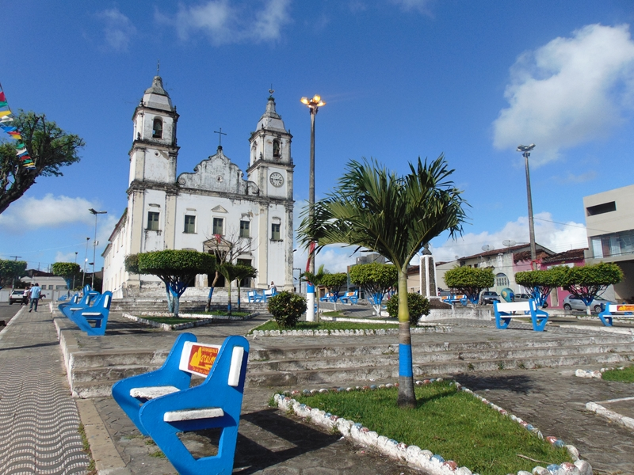

Maruim
História
Sergipe nasceu em Maruim. A frase pode parecer, mas não é nada exagerada. Basta que se conheça a fantástica história daquele município, que fica na região do Cotinguiba, a 30 quilômetros de Aracaju. Recentemente a bióloga e historiadora Maria Lúcia Marques Cruz e Silva, filha de Maruim, expôs achados históricos do município. São milhares de peças e documentos que revelam o apogeu e a decadência do Empório de Sergipe.
Empório, sim. Boa parte dos grupos empresariais de sucesso em Sergipe nasceu em Maruim. A força econômica e política desse município era tanta que foram instalados lá oito consulados. A cana-de-açúcar e o algodão atraíam os europeus, que em Maruim montaram colônias.
O nome da cidade vem do inseto maruim (os antigos chamavamMaroim), que em Tupi significa mosca pequena ou mosquito. O primeiro povoamento nasceu no encontro dos rios Sergipe e Ganhamoroba. Aos arredores do Porto das Redes (antiga Alfândega de Sergipe), surge Mombaça. Mas os ataques dos mosquitos obrigaram os poucos habitantes a se mudar dali.
O português Manoel Rodrigues de Figueiredo permite que as pessoas fugidas do Mombaça construam suas casas dentro de suas terras, no Engenho Maruim de Baixo. Outro português, José Pinto de Carvalho, construiu um grande armazém (trapiche) para negociar com o ouro da terra, que era o açúcar nas terras de Manoel Rodrigues. Depois de desavenças entre José Pinto e Manoel, Maruim passa a ser dependente de Santo Amaro e depois de Rosário do Catete. As brigas terminaram na chamada Revolução de Santo Amaro. As confusões só acabaram em 1835, quando o governador da Província, Manoel Ribeiro da Silva Lisboa, transformou Maruim em uma vila e no ano seguinte ela virou cidade. Para a história oficial, o fundador de Maruim foi José Pinto de Carvalho. Foi ele quem governou a recém-criada Vila de Maruim, e quem empossou o primeiro prefeito, Luís Barbosa Madureira.
fonte: https://cidades.ibge.gov.br/brasil/se/maruim/historicoPontos Turísticos
Prédios Antigos
A cidade de Maruim possui diversos prédios antigos e construções da época de engenho e da cana de açúcar, a cidade sergipana do século XIX e de grande importância para história do estado sergipano, possui um rico patrimônio.
Dados Gerais de acordo com o IBGE
| Prefeito (a) | Gilberto Maynart de Oliveira |
| Vice-Prefeito (a) | Edileuza da Silva |
| Site do município | https://maruim.se.gov.br/ |
| Área territorial | 95,554 km² |
| População estimada | 17.328 pessoas |
| Densidade demográfica | 174,29 hab/km² |
| IDHM | 0,618 |
| PIB per capita | R$ 19.730,91 |